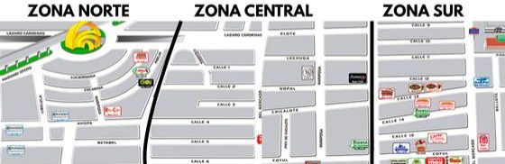

N
NIDOS — Sistema de Monitoreo
Prevención de inundaciones — Mercado de Abastos, Guadalajara
Reportar inundación
Panel de monitoreo
Mapa con zonas y niveles
Último reporte:
—

Zona Norte
Nivel estimado
20%
Zona Central
Nivel estimado
60%
Zona Sur
Nivel estimado
85%
Reportar inundación
Rellena la información un reporte.
Nombre del locatario
Número de local
Zona
Zona Norte
Zona Central
Zona Sur
Nivel estimado de agua (%)
Comentarios
Cancelar
Enviar reporte
Reporte enviado